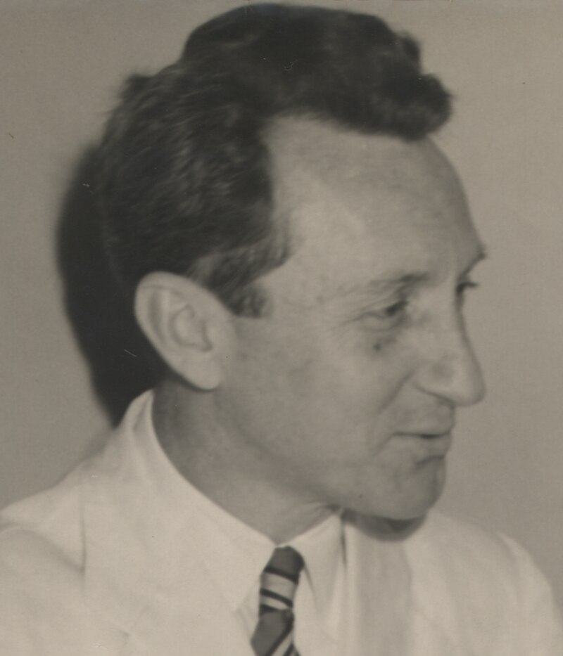

<!DOCTYPE html>
<html lang="en">
<head>
    <meta charset="UTF-8">
    <meta name="viewport" content="width=device-width, initial-scale=1.0">
    <title>Document</title>
</head>
<body>
    
</body>
</html><body>
    <h1>gracie barra  </h1>
    <h2> </h2>
    <div id="carouselExampleFade" class="carousel slide carousel-fade">
        <div class="carousel-inner">
          <div class="carousel-item active">
            
          </div>
          <div class="carousel-item">
            
<h2> <P>QUEM É CARLOS GRACIE ? </p> 
    <p>Informações</P>
       <p> Nascimento	14 de setembro de 1902
        Belém, PA</P>
       <p>Morte	7 de outubro de 1994 (92 anos)
        Petrópolis, RJ</P>
        <p>Nacionalidade	Brasil brasileiro
        Ocupação	atleta e grão-mestre em jiu-jitsu brasileiro
        Parentes notáveis	Irmãos: Hélio Gracie
        entre outros</p>
       <P> 21 filhos incluindo:</P>
       <P> Carlos Gracie Jr</P>
       <P>Carlson Gracie</P>
        <P>Robson Gracie</p>
        <P>Rolls Gracie</P>
       <P> entre outros
        Família Gracie</P>
        
        <P>GRADUAÇÃO</P>	   <P> Faixa vermelha 10º grau em jiu-jitsu brasileiro </p>
    
   <p> Carlos Gracie, teve 21 filhos e 13 deles se tornaram faixa pretas do JJ.</p>
    Hélio Gracie aprimorou técnicas <p>que forneceram as bases ao desenvolvimento do Brazilian Jiu-Jitsu (BJJ)</p>
    <p>Em 1925 foi fundada a primeira Escola Gracie no Rio de Janeiro.</p>
          </div> jiu </P><h/2>
             <h1>quando o jiu-jitsu chegou ao brasil?</h1>
          </div> <p><h2>dia 14 de novembro de 1914</P>
           <p> No entanto, é no dia 14 de novembro de 1914 que realmente o Jiu-Jítsu desembarcaria no Brasil, </P><P>através de Mitsuyo Esay Maeda, mais conhecido como o Conde Koma, mestre de</P><p>Jiu-Jítsu japonês e faixa preta de Judô da Kodokan do mestre Jigoro Kano, o Judô </P>que se originou do Jiu-Jítsu, aprimorando as técnicas de projeções </h2></p>
         <h2> <p> </p></h2>
         <h2><p> Principais golpes do Jiu Jitsu incluem:</p>
           <p> Articulações: Golpes que procuram neutralizar, imobilizar, estrangular, pressionar, torcer articulações</p><p> e lançar o adversário ao solo através de quedas1.
            Estrangulamentos: Exemplos incluem o "mata-leão"2.</p>
           <h2><p> Imobilizações: Como a montada3.
            Torções e alavancas: Como a chave de braço e o arm-lock3.</p>
            Outros golpes: Incluem a guilhotina e o joelho na barriga 
        </div>
        <button class="carousel-control-prev" type="button" data-bs-target="#carouselExampleFade" data-bs-slide="prev">
          <span class="carousel-control-prev-icon" aria-hidden="true"></span>
          <span class="visually-hidden">Previous</span>
        </button>
        <button class="carousel-control-next" type="button" data-bs-target="#carouselExampleFade" data-bs-slide="next">
          <span class="carousel-control-next-icon" aria-hidden="true"></span>
          <span class="visually-hidden">Next</span>
          <link rel="stylesheet" href="pag2.css">
        </button>
      </div>
</body>
    </head>